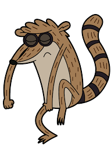
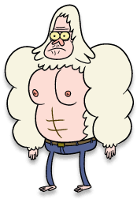

Personajes
Mordecai
Mordecai es uno de los protagonistas principales de la serie Un Show Más, junto con su mejor amigo Ribgy, un mapache de 23 años de edad, son trabajadores del parque. Mordecai es un arrendajo azul (denominado comúnmente como azulejo). Hizo su primera aparición en el corto no oficial llamado 2 in the AM PM participando como un cajero humano, que luego se transforma en el personaje a causa del resultado de un prototipo de riñonera, un caramelo con ácido o una droga. Más tarde, hace su primera aparición oficial en la serie de Cartoon Network en el episodio piloto. En la situación del doblaje, Mordecai es dada de voz por el mismo creador de Un Show Más, J.G. Quintel, en Latinoamérica es doblado por el actor Arturo Cataño, Bruno Coronel una frase en ep. The Real Thomas,Edson Matus en los episodios 231 hasta el 244 y en España es doblado por Eduardo Bosch.
Ribgy
Rigby (cuyo nombre real era Rigbone, aunque cuando cambió su nombre en Barco Basurero, quedó como Rigby) es uno de los personajes principales de la serie Un Show Más. Es un mapache de unos 28 años que trabaja como Jardinero del Parque con su mejor amigo,Mordecai. La primera aparición de Rigby es en el episodio "Piloto" (solo en USA) y "El Poder" (en Latinoamérica). Se le conoce por ser un mapache flojo, irresponsable e inmaduro. William Salyers es el que hace la voz de Rigby en Estados Unidos, en Latinoamérica Moisés Iván Mora, Alejandro Urbán en Skips contra la Tecnología y en España Rafa Romero.
skips
Skips Quippenger (más conocido como Skips, anteriormente llamado Walks, el cual es su verdadero nombre) es uno de los protagonistas de la serie Un Show Más. Skips es un pie grande inmortal y el empleado más dedicado del Parque. Mantiene todo funcionando a la perfección. Como ha vivido ahí por siglos y siglos conoce el parque como la palma de su mano. También sabe las cosas que le pasan a Mordecai y a Rigby. Él ayuda mucho a Benson y corrige los errores de Mordecai y Rigby. Él es muy majestuoso y sabio, y tiene un gran conocimiento de muchas cosas de lo desconocido, debido a su pasado por su inmortalidad. Skips hizo su primera aparición en el episodio Piloto. La voz de Skips, en U.S.A, es producida por Mark Hamill. Mientras que en Latinoamérica se conoce que es doblado por Javier Rivero, Raymundo Armijo en varios episodios de la 6a Temporada y actualmente desde la Temporada 7 lo dobla César Garduza.
Benson

Benson Dunwoody[1] is one of the seven main characters of Regular Show. He is a gumball machine, and was originally known as The Park's manager in the entire series until the series finale, when Mr. Mallard dies. As a manager, he is the boss of every park worker (with the possible exception of Pops). He has a short temper and has a tendency of yelling at Mordecai and Rigby every time they slack off. Benson made his debut in J.G. Quintel's animated short "2 in the AM PM", where one of the cashiers (voiced by Sam Marin) transformed into a prototype version of Benson after being drugged from candy. He then made his first appearance in the pilot. In the short film The Naive Man from Lolliland, proto-Pops calls his chauffeur Benson, however in the film Benson appears to be a human, not a gumball machine. He is voiced by Sam Marin.